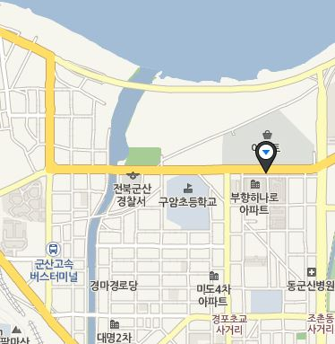

Gyeongam-dong Railroad Village
The railroad, which is 2.5 km long,
It was made in April 1944 by Paper Korea to carry products and raw materials.
A cargo train with 5 to 10 cargo containers
He passed the village between 8:30 am and 9:30 am and between 10:30 am and 12:00 am
There were eleven crossings in the village with and without breakers in the village.
People live slowly because they have to pass through the neighborhood.
When the train passed by, three station personnel blew the whistle in front of the train and shouted to stop people from passing,
In the meantime, the residents brought in the peppers and others, which they put outside, and invited puppies.
A slow train of 10 km / h stopped completely on July 1, 2008
Though the train is gone, there is still a quiet village life, such as doors and walls, clothesline, and gardens that have no boundaries of ownership.
Currently, the village of the railroad, anime "dream of a precious day" stage,
The movie "When a Man Wants to Love" is famous for its location and photo lovers.
The way to go
